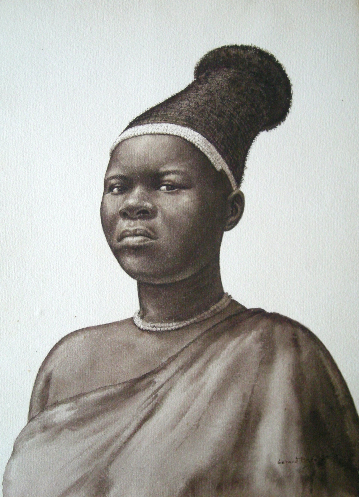

Gerard Bhengu
1910–1990
Artist Biography
Gerard Bengu/Bhengu grew up in southern Natal, South Africa at the Mariannhill Monastery's Centecow outpost. His family was Catholic and he attended the mission school to Standard 5. His aptitude for drawing had been noticed and this was encouraged by Dr Kohler who provided him with a studio at Centecow between 1926 and 1931. Kohler also gave Bhengu prints of Old Master paintings and it was from these that he developed his meticulous style. The Department of Education later also provided him with a studio, this time at Edendale, while he made illustrations for Zulu textbooks. His early work focused on realistic portrayals of rural Bhaca life and culture. In 1938 Bengu decided to become a full-time artist and moved to Durban. Various patrons supported him while in Durban including the art supplier P W Story and the department story Payne Bros. It was difficult earning a living from art in the 1940s and 1950s; consequently, he lived in Durban's shack land, Cato Manor. He frequently did not have enough money to work in colour so produced sepia wash character studies, his favourite being of old men and young children. A lavishly illustrated monograph by Phyllis Savory in 1965 helped cement his reputation. Bhengu is now considered a forerunner of South African urban art, despite his lack of formal art school training. His work is held in a number of South African public galleries including Johannesburg Art Gallery, the De Beers Centenary Art Gallery, Standard Bank Gallery and Durban’s Mashu Museum of Ethnology. In addition, in 2013 the Gerard Bhengu Museum was opened in his honour at Centecow Mission in Creighton, Natal.

Untitled